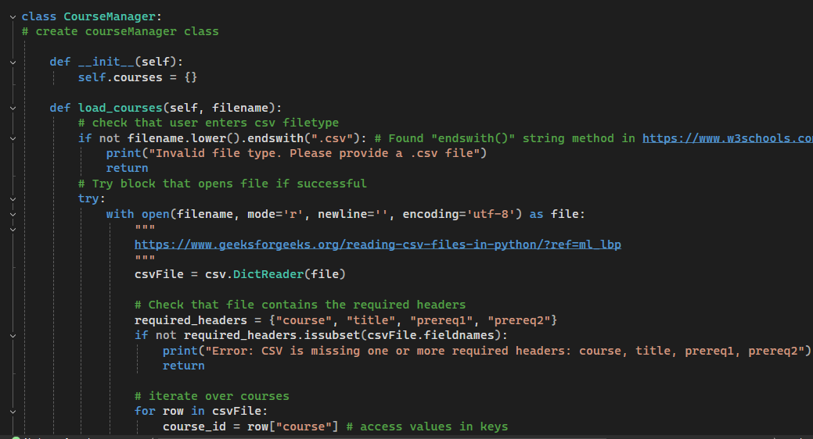
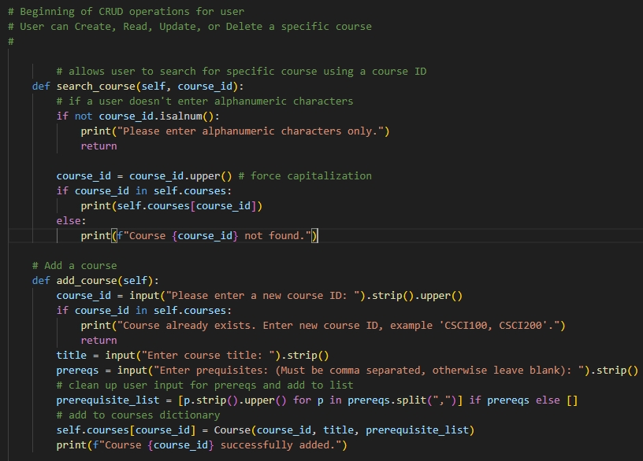

The enhancement for the Software Design and Engineering category was focused on converting the Course Manager project's original language from C++ to Python. The core logic and functionality was maintained across language conversion while also including modular improvements through object-oriented design principles like separating out the logic for the course manager object.


Enhancement Description
The Course Manager class was enhanced to inherit from the Course class, which is responsible for creating course objects and formatting the course ID, title, and prerequisites. I also introduced full CRUD functionality, enabling users to search for a specific course, add a new course, edit an existing one, or delete a course.
A dictionary was used as the primary data structure, A dictionary was used as the primary data structure, allowing for efficient addition and deletion of courses.
The application retained its command-line interface for user interaction and was redesigned to emphasize modularity and clean architecture, while preserving core features such as loading, searching, and printing courses.


The original artifact was a console-based Course Manager program developed in C++ during my CS 300 course. It loaded course data from a CSV file and stored it in a hash table.
I selected this artifact for enhancement in the Software Design and Engineering category because I wanted to strengthen my understanding of data structures and reinforce core software design principles while still gaining hands-on experience with Python.
Through this enhancement, I
demonstrated important software engineering concepts such as object-oriented programming, input validation, and robust exception handling.
These updates helped align with the project with course outcomes related to secure design, technical documentation, and
the use of innovative computing techniques. Throughout the process of development, I incorporated Python-specific features like list comprehensions, dictionaries, file handling, and exception handling using try-except blocks.
My focus was building a modular design with strong secure coding practices and anticipating edge cases in user input to ensure a seamless user experience.
This enhancement highlights my ability to adapt to new programming languages and apply software engineering techniques effectively, and also helped me to meet the following course outcomes
like secure software design, and innovative computing techniques.
Course Outcomes
- Employ strategies for building collaborative environments that enable diverse audiences to support organizational decision making in the field of computer science
- Design, develop, and deliver professional-quality oral, written, and visual communications that are coherent, technically sound, and appropriately adapted to specific audiences and contexts
- Demonstrate an ability to use well-founded and innovative techniques, skills, and tools in computing practices for the purpose of implementing computer solutions that deliver value and accomplish industry-specific goals
- Develop a security mindset that anticipates adversarial exploits in software architecture and designs to expose potential vulnerabilities, mitigate design flaws, and ensure privacy and enhanced security of data and resources